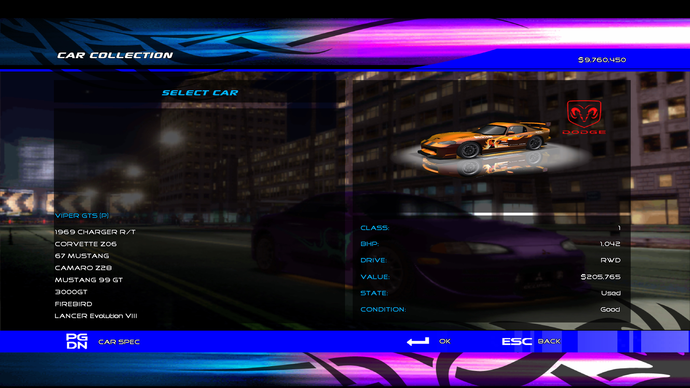

The Focus glitch (or the Civic glitch in Eliminator) occurs when entering certain sprint races in which the AI has no possible cars they can use. In this state, the game falls back to giving all opponents stock 2004 Focus ZTS's in the original Juiced, and stock Honda Civic Si's in Eliminator.

The AI rivals in Juiced do not have access to as many options when it comes to upgrading their car, leading to some instances where the player can get a car into a class the AI can't. The game will normally prevent the player from hosting races that would invoke this limitation. For example, even though you can build a class 3 Monaro CV8, you cannot host a class 3 Holden race. Try to, and the game will give you the following error message:
There is, however, one oversight the developers didn't account for. Whenever you enter a sprint race, the game will only pit you against cars of the same drivetrain. After all, if you bring your shitbox Corsa to your local drags, it wouldn't be very fair for Maria to bring an Evo VI and smoke you off the line. This drivetrain filter goes unchecked, so as long as there's any car that the AI can bring for a specific type of event, the game will let you host it. If the only eligible cars then get filtered out, the game is put in a situation where it has no cars to give the AI. It's at this point where the game activates a failsafe where it just gives everyone a default car.
Why these cars in particular? In the game's files, there is a script called cardefs.txt where all of the game's cars are initialized, and where several variables are defined including its long name, manufacturer and country, engine sound, all of its body parts, etc. In Juiced, this script defines the Focus ZTS first, and in Juiced: Eliminator, the Honda Civic Si is defined first. Thus, this glitch is, in essence, the game falling back on the first car it knows. If you were to swap its position in cardefs with another car, that car would then become the default instead.
There are currently five known ways to trigger the Focus glitch under normal circumstances, and two known ways to trigger the Civic glitch, both involving some creative exploitation of some of the game's limitations. (Bear in mind this glitch only works if you are the active driver, as the drivetrain filter is not applied if you send in a crewmate in your place.)
Build a 3000GT with at least a level 3 intake, prototype exhaust, and prototype turbos. Then, use the ECU tuning to push the car into class 2. Enter into any sprint race.
One of the upgrades the AI is incapable of using is ECU tuning. This lets you fine-tune your car's power ±5%. In this case, the player can use it to tune a 3000GT to 700+ BHP, sending it into class 2.
Without it, even with all prototype parts, the 3000GT can only reach 688 BHP in their hands. As the 3000GT is the most powerful 4WD car in the game, there's no 4WD car the AI can use in class 2, and thus the glitch is triggered.
Take a Skyline GT-R and use the ECU tuning to detune it to class 7. Enter it into a Nissan sprint race.
Similarly to method 1, since the AI cannot use ECU tuning, they cannot get the Skyline below class 6. While the 300ZX and the 350Z start out in class 7, neither can be used since they're both RWD.
This method does not work in Juiced: Eliminator due to the lack of one-make races.
Put four prototype parts on any 4WD car while keeping it within class 7 or 6. Enter it into a prototype sprint race.
This exposes the second main limitation the AI has on upgrading cars. While the player is able to mix and match different levels of parts, the AI can only upgrade a car five different ways:
You can check this yourself: take a look under a rival's hood, either by selecting Check Car when challenged to a bet, or by jacking their ride in a pink slip. Their car will always conform to one of these five schemes, 100% of the time.
This presents a problem with regards to prototype cars. For a car to be considered a prototype, all you need are four prototype parts. Since there are four categories of parts that do not affect power, the player can build a prototype car at any BHP (even a 110 BHP Punto, if you're so inclined). For the AI to build a prototype car, they're forced to use all seven parts, meaning they'll put out as much power as possible.
Given this restriction, the lowest power proto 4WD car the AI can use is the Eclipse GSX, at 444 BHP. They can use class 7 and 6 prototype cars, hence why class 7 and 6 prototype events can still exist, but only in FWD and RWD. Build a prototype 4WD car and keep it in either of those two classes, and the AI will have nothing to answer it with.
Build a Viper GTS to class 4. Enter it into a Dodge sprint race.
This might seem confusing. The Viper starts in class 5 and reaches all the way into class 1 with ease, so what's so special about class 4 that causes the Focus glitch?
Recall the five ways the AI can upgrade a car. The Viper starts at 468 BHP without any upgrades, making it eligible for class 5. If you take that Viper and put all level 1 parts on it, which is the next step up for the AI, it'll have 621 BHP... in class 3. Power upgrades are just a multiplier applied to the current BHP, meaning the amount of power you'll gain from an upgrade is directly proportional to how much power the car starts with. The Viper is unique in that, because of how much power it has stock, when following the AI's upgrade progression, it completely skips over class 4! This means you will never, ever see the AI bring a Viper to any class 4 race.
There is still another RWD Dodge that's eligible for class 4, though, and that's the 1969 Charger R/T. It starts with 444 BHP, and with all level 1 parts, it only reaches 589 BHP, landing it within class 4. So it should be eligible, right?
Well... yeah. It should. All of the conditions are met. And yet, you'll never see the Charger in a class 4 sprint race. Why? Because you'll never see the Charger in any sprint race.
For reasons we don't understand, the Charger is blacklisted from ever appearing in a sprint race in Career mode. No other car exhibits this behavior (including the other three classic muscle cars). We have no idea what causes it, or if it's even meant to happen. They're perfectly capable of picking one in Custom Race, and you can always give your crewmate one - in both instances, they drive the car perfectly fine.
If that sounds farfetched, remember that there is a certain infamous exploit in the game that involves class 1 cars... have you ever seen a Charger while using it? It can reach 941 BHP in the hands of the AI, more than the 907 BHP the Z06 is capable of... and yet the adage goes: "Always bet on the Viper, never bet on the Corvette." No mention, no trace of the old timer. If it could appear, the exploit would be even more reliable, since the Charger isn't nearly fast enough to compete with the Z06, let alone the Viper.
Whatever the cause may be, the Charger isn't eligible for sprint races, the Viper isn't eligible for class 4 races, and the FWD SRT-4 is obviously a no-go. All of that combined makes for a rather intricate glitch setup.
This method does not work in Juiced: Eliminator due to the lack of one-make races. Furthermore, it will not actually work on the Japanese PS2 version of the game. Because...
Detune a Viper GTS to class 6. Enter a Dodge sprint race.
The Japanese PS2 version of Juiced is an interesting case. It's the last known build of Juiced to be released, a year after the original launch in 2005, and has some changes not found in any other version, including adjustments to several cars' handling files. The Viper was the only car to be nerfed in this version, starting out with just 405 BHP.
Since it has much less power stock, level 1 upgrades are no longer enough to make the Viper leapfrog over class 4, hence why method 4 doesn't work on this version. In nerfing the Viper, though, the pendulum swung too far in the other direction and allowed for a different Focus glitch. Being so close to the bottom of class 5 makes it trivial to detune the Viper down to class 6.
Since this is only possible with ECU tuning, this is off-limits to the AI, and the only other RWD Dodge in the game has even more power. What results is possibly the most obscure Focus glitch setup, exclusive to one of the strangest versions of Juiced.
When running the PC versions of Juiced 1 and 2 at a resolution beyond 1600x1200, the font files will no longer scale up properly, and will progressively become smaller with higher resolutions. In Juiced 2, the text on license plates will grow in size.
This is due to a limitation in how the PC ports handle fonts. Found in the ui.dat/fonts directory of both games, every .d8f (font) file has several copies designed for different horizontal resolutions (640px, 800px, 1024px, 1280px, 1600px, etc.) No font file exists for resolutions beyond this, thus this font scaling issue occurs.
TBD
When booting the game using the -i argument on the PC version, the game will bypass the profile selection screen, loading you into a default one. Autosave is disabled by default, and when re-enabling it through the Extras menu, the game will erroneously use the PlayStation 2 save prompt. This is a purely visual bug, and saving the game functions normally.
Showoffs in Career mode will always count as a loss in your stats, even if you beat the target score.
When creating an online lobby, Australia is missing under the territory filter, making it impossible to host a lobby limited to just the Monaro CV8 and Falcon XR8.
The meshes for the second and third spoiler for the Mustang 99 GT are mixed up between the menus and in game. Applying one of these spoilers in the Workshop will result in the other loading in a race (this can be seen by entering the Dynamometer).
A mod has been made to fix this for the PC version.
The ICE and tire decals on the left side of the S2000 are incorrectly mirrored.
When applying the NU:UK front bumper on the Falcon XR8, the right half of the Ford badge on the grill erroneously mirrors over the left side.